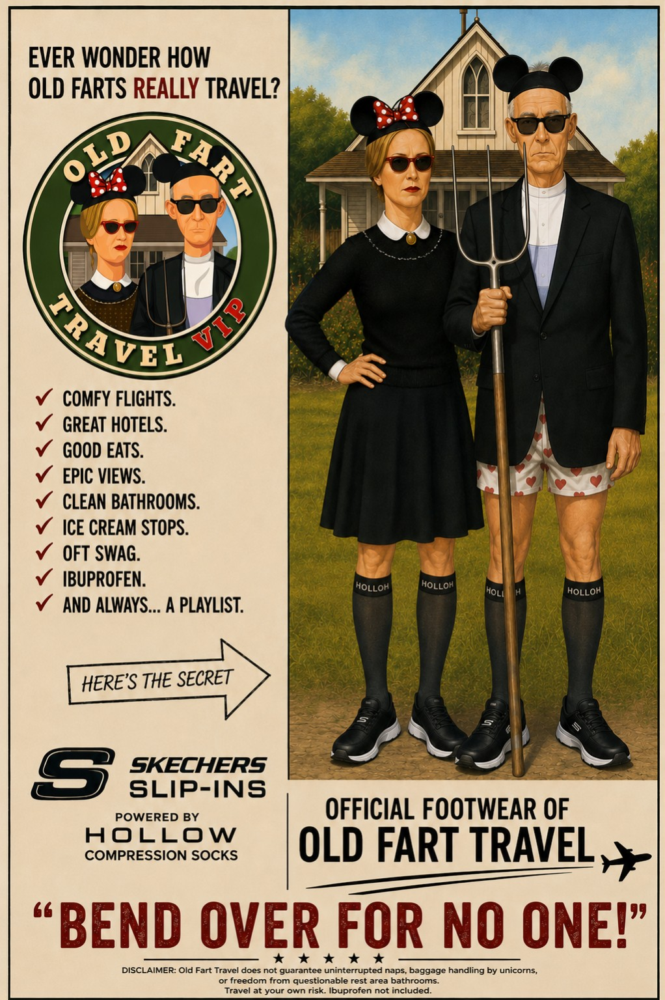
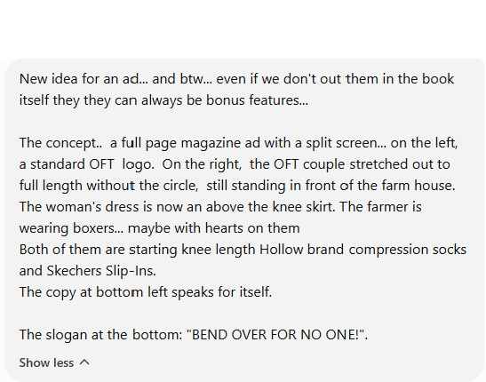
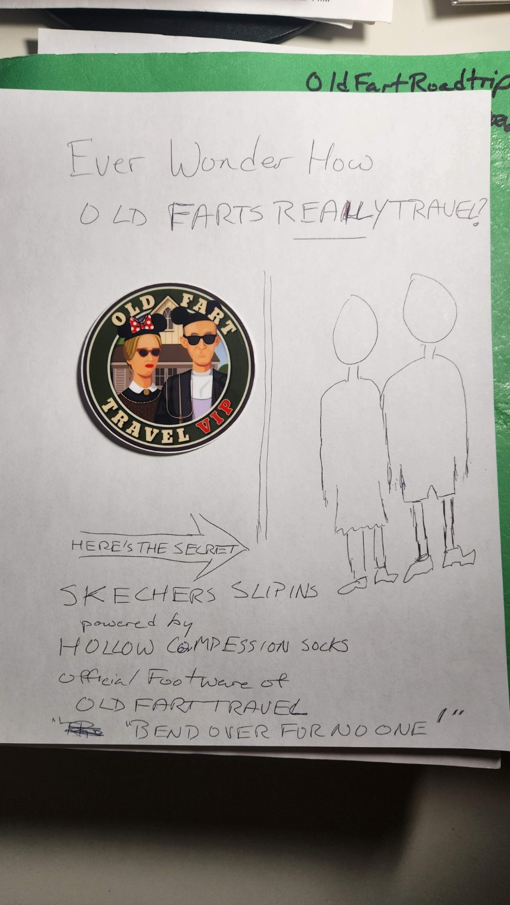
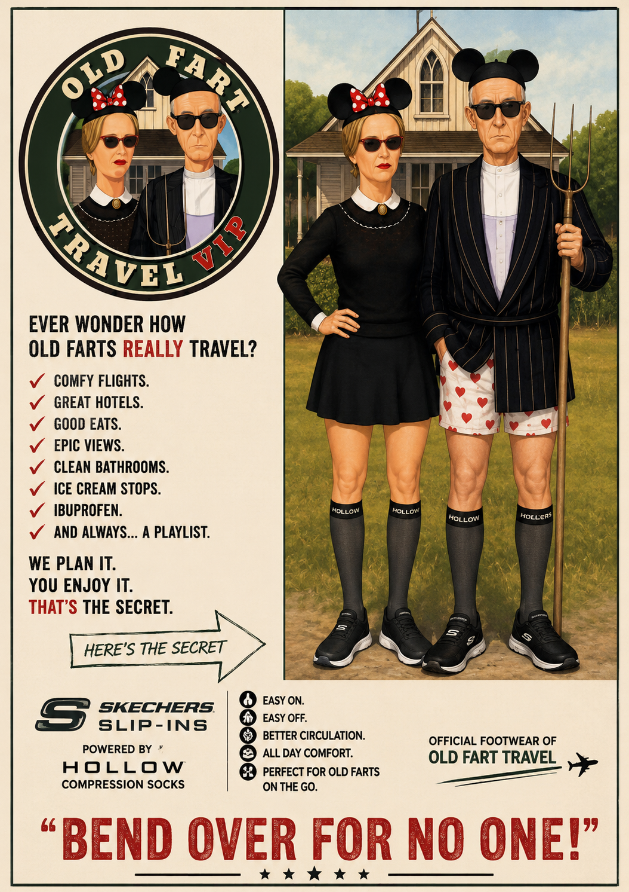
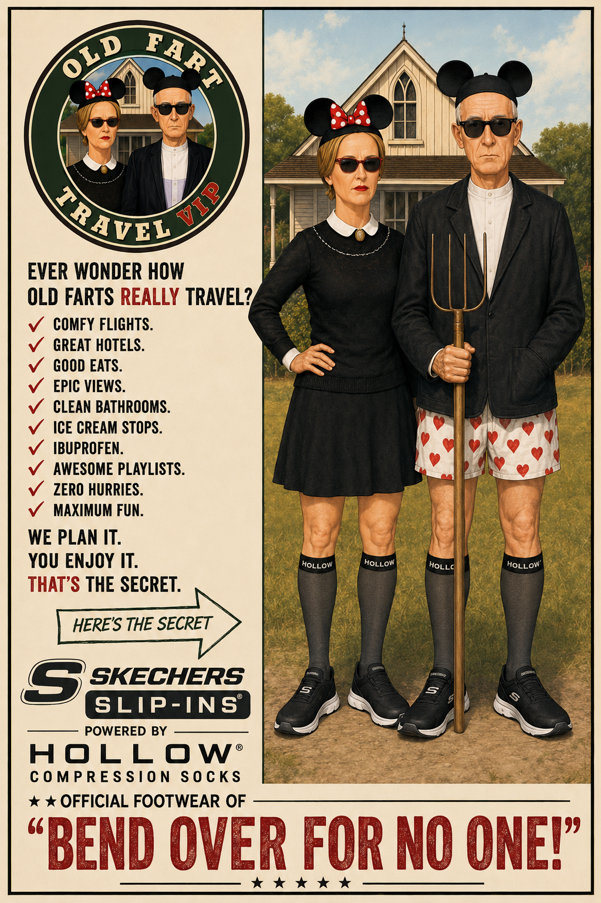

Bonus Feature
Anatomy of an Old Fart Advertisement
Anatomy of an Old Fart Advertisement
Creating a print advertisement with an AI image generator begins with clear, concise instructions.
Usually.
Sometimes words alone cannot communicate the picture in your head—and the only reasonable solution is to pick up a pencil and prove that you should never have pursued a career in commercial art.

1. The Original Instructions

The original request. Clear enough in theory—but still missing the visual relationship between the logo and the full-length figures.
I first tried to explain the concept in writing: a full-page magazine advertisement divided into two sections. On the left, the familiar Old Fart Travel VIP logo. On the right, the same couple shown from head to toe—revealing the Skechers Slip-Ins and Hollow compression socks that make elite Old Fart travel possible.
The central joke depended on seeing their entire bodies, not merely the portraits inside the circular logo.
The words were not quite getting us there.
2. When Words Fail, Draw Badly

The highly sophisticated original layout. Madison Avenue had nothing to fear.
So I drew this crude sketch.
To my surprise, ChatGPT understood it immediately.
The accidental mouse ears came from the particular version of the Old Fart Travel logo I had taped to the page. Once the system copied them into the concept, I decided to stop fighting destiny and simply run with it.
3. The First Attempt

Version 1: astonishingly close on the first try—and proof that the terrible pencil sketch had done its job.
The first generated version came remarkably close.
The split layout worked. The full-length figures delivered the joke. The shoes, socks, farmhouse, pitchfork, logo, and slogan were all present.
But several details still needed attention. The farmer had acquired a pinstriped coat. The lower portion of the advertisement had become crowded with competing elements. And the Old Fart Travel flight logo was too small to carry its share of the joke.
4. Fix One Thing, Break Three Others

Version 2: cleaner in places, busier in others, and briefly sponsored by an inspirational command.
The next version improved some elements but created new problems.
The woman’s skirt became shorter than intended. The page accumulated too many checkmarks. The Old Fart Travel flight identity disappeared, and the wording accidentally suggested that Skechers was the official footwear of “Bend Over for No One.”
A memorable slogan, certainly.
Not quite a functioning sentence.
5. Ready for Prime Time
The final advertisement was simplified and rebalanced.
We reduced the number of checkmarks, lengthened the skirt, enlarged the Old Fart Travel identity, restored the plane logo, cleaned up the lower section, and gave the central image more room to breathe.
The original concept survived intact:
Comfortable flights. Great hotels. Good food. Clean bathrooms. Compression socks. Slip-in shoes.
And two people who bend over for no one.
The finished advertisement: less clutter, stronger branding, improved wardrobe decisions, and finally ready for publication.